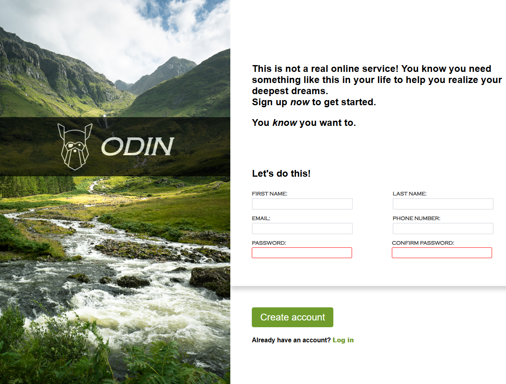

Your projects
Kalkulator
An educational calculator application built with vanilla JavaScript for practicing core JS concepts. It supports basic operations, decimals, and a responsive layout, with a small easter egg included.
Link to project
Tribute Website – Dr. Mladen Radić
This is a simple static frontend website built with HTML and CSS as a personal tribute and expression of gratitude to Dr. Mladen Radić. The project is non-commercial, informal in nature, and primarily serves as a practice and showcase of basic frontend skills.
Link to project

Form
This is a simple signup page built with pure HTML and CSS. The form includes basic input validation, custom focus styles, and a styled submit button, serving as a frontend practice project without frameworks or JavaScript.
Link to project
